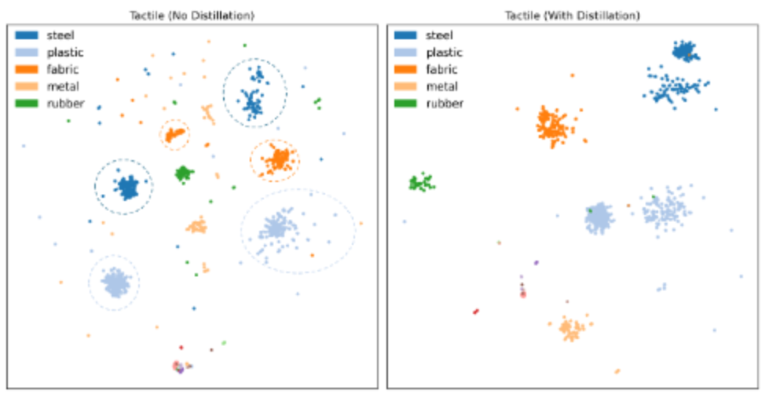

From sensor-dependent images to shared material semantics
The same material produces different contact images across tactile sensors. Descriptions such as “glossy, splotchy, hard” capture properties that persist across hardware.
Language supervision during training
A frozen language teacher guides the tactile encoder through feature-level distillation. The learned representation can then be reused with a lightweight task-specific classifier.
Abstract
Robots need touch to manipulate objects safely and reliably, as many properties, such as softness, texture, and contact stability, are hard to infer from vision alone. However, vision-based tactile sensors yield different observations of the same material due to variations in optics, elastomer properties, and illumination, leading to poor generalization when trained on a single or multiple sensors. We propose a language-guided distillation framework for learning sensor-robust tactile representations. Language encodes high-level semantic properties of touch (e.g., rough, soft, slippery) that remain invariant across sensing hardware, providing a natural sensor-agnostic supervisory signal.
We construct a 39K-sample touch–language dataset with human-annotated material labels and train a tactile encoder to align sensor-specific tactile images with language embeddings in a shared semantic space. We evaluate few-shot learning, cross-sensor transfer, and six existing tactile datasets. The results support data-efficient adaptation and robust material recognition across sensing hardware.
Related Project Video
Language–Tactile Distillation
Training: language teaches touch
A frozen BART language encoder provides semantic supervision to a trainable ViT tactile encoder. Feature-level knowledge distillation aligns softened teacher and student representations using KL divergence, alongside supervised classification.
Adaptation: freeze the representation
For a new task, the distilled tactile encoder is frozen and only a lightweight MLP classifier is trained. This reduces trainable parameters to 0.017% of the total. Inference uses tactile input alone; language is needed only during training.
Sections IV and VI-B: α = 0.25, temperature T = 3.5.
Multimodal Tactile Dataset
We combine HCT and SSVTP into approximately 39K DIGIT touch–vision–language samples. Three human annotators assign material labels across 32 categories, using paired RGB images for consistent labeling. Twelve classes are used for distillation; twenty disjoint, unseen classes are reserved for recognition evaluation.
| Dataset | Vision | Tactile | Language | Class labels | Classes | Samples |
|---|---|---|---|---|---|---|
| TAG | Yes | Yes | No | Yes | 20 | 121K |
| YCB | No | Yes | No | Yes | 10 | 182K |
| ICRA18 | No | Yes | No | Yes | 19 | 139K |
| FEEL | Yes | Yes | No | Yes | 51 | 111K |
| SSVTP | Yes | Yes | Yes | No | — | 4K |
| HCT | Yes | Yes | Yes | No | — | 36K |
| Ours | Yes | Yes | Yes | Yes | 32 | 39K |
Experimental Results
Select a dataset and metric to compare the models in Table II. Each plot uses a fixed scale and displays exact values. The proposed model is distilled first, then adapted to downstream datasets; baselines are trained directly on each target dataset.
Enable JavaScript to explore the interactive comparison.
Show numerical results for the selected dataset
| Model | Accuracy (%) | Precision | Recall | F1 |
|---|
Language Supervision Improves Tactile Recognition
The proposed model achieves 95.06% accuracy using only tactile input at inference. This is a 30.07 percentage-point improvement over the tactile-only baseline and 4.17 points above the vision-only model (Table III).
| Modality | Accuracy (%) |
|---|---|
| Language only | 60.38 |
| Tactile only | 64.99 |
| Vision only | 90.89 |
| Ours (language-guided tactile) | 95.06 |
Structure of the Learned Representations

Ablation Study
Table IV · Accuracy (%). Each experiment varies a different component; values are not directly interchangeable across ablation groups.
Read the Paper
Acknowledgements
This research was supported by the Center for Autonomous Robotic Systems (CARS), Khalifa University of Science and Technology (KU-CARS), through the project "T2FS (TactileThumbFirmSense) Device: A Wearable Thumb Device That is Capable of Sensing Fruit Firmness Using Vision-Based Tactile Sensors" by Silal, under Project ID: KU-EXT-SILAL-2025-8475000023.
BibTeX
@inproceedings{mohsan2026language,
title={Language-Guided Representation Learning for Robust Cross-Sensor Tactile Perception},
author={Mohsan, Mashood M. and Din, Muhayy Ud and Xu, Binzhao and Abubakar, Ahmad and Hussain, Irfan},
booktitle={IEEE/RSJ International Conference on Intelligent Robots and Systems (IROS)},
year={2026}
}